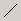
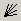
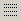
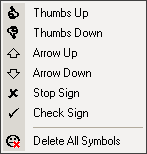

Графические инструменты
Вы можете
добавить на график различные символы и линии. Для добавления линий и
символов можно использовать меню Insert или
кнопки на панели. Удалять линии и символы по одному начиная с добавленного
позже всех можно клавишей BackSpace или через
меню Charts. Также можно удалить все линии и
символы через меню Charts. Редактировать объекты
тоже можно, нужно только их выделить двойным кликом, нажать правую клавишу
мыши и выбрать Properties (выделенный объект
можно также двигать и удалять вне очереди). При этом не забывайте, что
выделение текущего объекта не снимается при выделении следующего - его
надо снимать повторным двойным кликом, иначе при выборе редактирования
объекта, придется заполнять свойства всех выделенных объектов. При этом
двигаются выделенные объекты независимо друг от друга. Панель Line Studies выполнена в виде плавающего окна, которое
можно пристыковать к левому, правому или нижнему краям окна программы.
- перекрестие (Crosshair)
позволяет точно позиционировать курсор мыши на графике. С помощью панели
Line Studies вы можете добавить на график
следующие элементы:
 - вертикальная линия (Vertical
Line);
- вертикальная линия (Vertical
Line);
 - горизонтальная линия (Horizontal
Line);
- горизонтальная линия (Horizontal
Line);
 - линия тренда (Trend Line);
- Вилы
Эндрюса (Andrews` Pitchfork);
 - Веер Ганна(Gann Fan);
- Веер Фибоначчи
(Fibonacci Fan);
- Дуги Фибоначчи
(Fibonacci Arcs);
 - уровни коррекции
Фибоначчи (Fibonacci Retracement);
 -
вспомогательные символы (Symbols);
-
вспомогательные символы (Symbols);
 -
поясняющий текст (Text).
-
поясняющий текст (Text).
Для добавления
вертикальной или горизонтальной линии нажмите на соответствующей кнопке
панели Line Studies и щелкните левой кнопкой мыши
в нужном месте графика. Для добавления линии тренда или уровней коррекции
Фибоначчи нажмите на соответствующей кнопке панели Line
Studies, далее нажмите левую кнопку мыши (и не отпускайте) на
первой точке тренда (точке начала движения - для уровней), переместите
курсор на вторую точку тренда (точку окончания движения - для уровней) и
отпустите левую кнопку мыши. Для построения линии канала нажмите
одновременно Ctrl и левую кнопку мыши на
выделенном тренде. Не отпуская кнопки мыши переместите ее. За курсором
должен потянуться новый тренд, параллельный выделенному. Для добавления
символа щелкните на кнопке . Появится
вспомогательное меню:

Выберите
подходящий символ. Далее щелкните на нужном месте графика.
Для
добавления текста на графике:
- щелкните на кнопке ;
- щелкните на нужном месте графика;
- дважды щелкните на появившейся надписи "Text" - должен появится
контур вокруг надписи;
- нажмите правую кнопку мыши над надписью и выберите пункт меню Properties...:
- отредактируйте свойства надписи. За текст надписи отвечает свойство
Text. После редактирования нажмите OK.
- дважды щелкните мышью на надписи, чтобы убрать выделение. Контур
должен исчезнуть.
Назад Содержание Далее